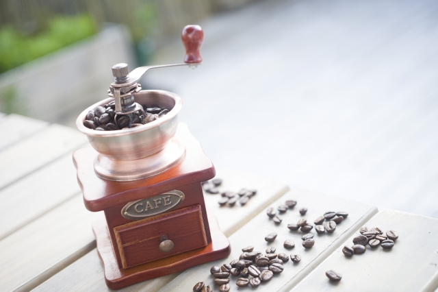
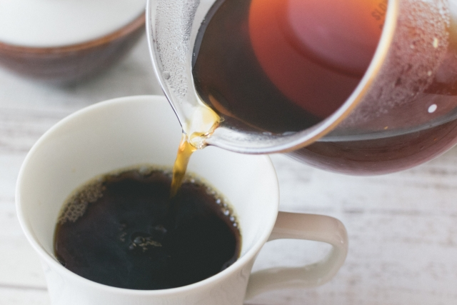

最高の１杯のために
カフェで飲むようなコクのあるおいしいコーヒーを作りたい
- 準備 -
必要な機材を確認しよう

ドリッパー
豆の受け皿。ドリッパーにフィルターをセットし、ミルで粉末状にした豆を入れてお湯を注ぐ

ミル
豆を細かく砕くための機械。手動と電動タイプがある。砕く際に熱が籠らないようにゆっくりと回すのがコツ。電動の場合は刃が熱くなりにくいセラミック製がおすすめ。

ポット
ドリップ専用のポットは注ぎ口が通常より細くなっていて、ゆっくり調整しながら注げる構造なのが特徴。電気ケトル機能が一体となった物もある。
- コーヒー豆を挽く -
1杯につき、約12gの豆を使用します。
挽き具合は中～粗挽きがおすすめです。粗さにバラつきの出にくいミルを使用しましょう。

- 蒸らす -
粉をドリッパーに入れたら平らにならし、お湯を全体に注いでいきます。
全体にお湯をかけたら注ぐのを止め、30秒程そのまま蒸します。

※膨らむのは豆が新鮮な証！
- お湯を注ぐ -
蒸した後はお湯を注いでいきます。
この時円を描くように、ゆっくりとお湯を置く感じで注ぎます。

- カップに入れる -
サーバーを軽く回して均一にしながら注ぎます。
コーヒーが覚めにくいよう、事前にカップにお湯を注いで温めておきます。

- 完成 -
カップに注いだら完成です。
温度による味の変化を楽しみながらいただきましょう！